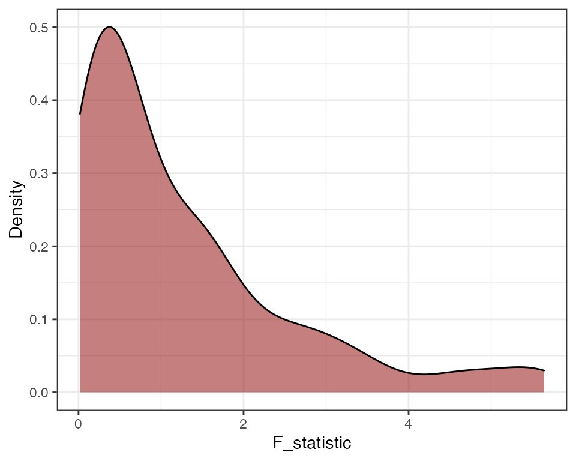

cwbmeta.RmdTypical methods to conduct meta-analysis—pooling effect sizes or analyzing moderating effects with meta-regression—work under the assumption that the effect size estimates are independent. However, primary studies often report multiple estimates of effect sizes. Dependent effect sizes can occur through correlated effects structure or hierarchical effects structure or a combination of the two (Hedges, Tipton, & Johnson, 2010; James E. Pustejovsky & Tipton, 2020). Correlated effects data structure typically occurs due to multiple correlated measures of an outcome, repeated measures of the outcome data, or comparison of multiple comparison groups to the same treatment group (Hedges, Tipton, & Johnson, 2010). Hierarchical effects structure typically occurs when primary meta-analysis includes multiple studies conducted by the same lab, researcher, or in the same region (Hedges, Tipton, & Johnson, 2010).
Researchers may be inclined to ignore dependence and use methods that assume that each effect size estimate is independent. However, doing so can result in inaccurate standard errors and therefore, hypothesis tests with incorrect Type I error rates, and confidence intervals with incorrect coverage levels (Becker, 2000). Ad-hoc methods include averaging effect sizes by study or selecting an effect size randomly per study. These methods result in loss of information and are not suitable for studying within-study variation in effect sizes (Hedges, Tipton, & Johnson, 2010). A method called shifting the unit-of-analysis involves running meta-analytic models for different subsets of the data (Cooper, 1998). However, this strategy is not useful if a researcher wants to summarize effects across the subsets or study differential effects (Becker, 2000).
Ignoring dependent effect sizes when conducting meta-analysis can lead to inaccurate estimates of standard errors and thus, inaccurate inferences from hypothesis tests (Becker, 2000). The increasingly popular method to handle such dependence, robust variance estimation (RVE), results in inflated Type 1 error rate when the number of studies is small (Hedges, Tipton, & Johnson, 2010; Tipton, 2015). Tipton (2015) and Tipton & Pustejovsky (2015) have recommended a small sample correction for RVE, called the HTZ test (CR2 Type correction with Satterthwaite degrees of freedom), which has been shown to control Type 1 error rate.
The ideal solution for handling dependence would be to use a multivariate model (Becker, 2000; Hedges, Tipton, & Johnson, 2010). This approach explicitly models dependence among the effect sizes (Becker, 2000; Hedges, Tipton, & Johnson, 2010). However, multivariate meta-analysis requires knowledge of correlations or covariances between pairs of effect size estimates within each study, which are often difficult to obtain from primary studies.
To handle dependence without knowing the covariance structure between effect size estimates, Hedges, Tipton, & Johnson (2010) proposed the use of robust variance estimation (RVE). RVE involves estimating the variances for the meta-regression model’s coefficients using sandwich estimators that are valid even when the covariance structure is unknown or mis-specified (Hedges, Tipton, & Johnson, 2010). However, the performance characteristics of RVE are asymptotic in that a large number of clusters or studies is required to provide accurate standard error estimates (Hedges, Tipton, & Johnson, 2010). If the number of studies in a meta-analysis is small, RVE, as originally proposed by Hedges, Tipton, & Johnson (2010), can result in downwardly biased standard errors and inflation of Type I error rates Tipton (2015).
Tipton (2015) and Tipton & Pustejovsky (2015) examined several small sample correction methods. Tipton (2015) recommended CR2 type correction for RVE as well as the use of Satterthwaite degrees of freedom for single coefficient tests. Tipton & Pustejovsky (2015) examined corrections for multiple-contrast hypothesis tests. Tipton & Pustejovsky (2015) found that the HTZ test, which is an extension of the CR2 correction method with the Satterthwaite degrees of freedom, controlled Type 1 error rate adequately even when the number of studies was small. However, Joshi, Pustejovsky, & Beretvas (2021) showed, through simulations, that the HTZ test can be conservative. We examined another method, cluster wild bootstrapping (CWB), that has been studied in the econometrics literature but not in the meta-analytic context. The results of the simulations from Joshi, Pustejovsky, & Beretvas (2021) showed that CWB adequately controlled for Type 1 error rate and had more power than the HTZ test especially for multiple-contrast hypothesis tests.
General bootstrapping can be used to estimate measures of uncertainty, like standard errors, p-values and confidence intervals, even when other methods fail (Boos & others, 2003). Bootstrapping involves re-sampling from the original data many times to create an empirical distribution which is used in place of the distribution of an estimate or test statistic (Boos & others, 2003).
Several bootstrapping data generating processes are available. The most common one is pair bootstrapping, which involves re-sampling with replacement the set of outcome and covariate data for each case (Freedman, 1981, 1984). For data involving clusters, the entire cluster is re-sampled (Cameron, Gelbach, & Miller, 2008). In meta-analytic studies with small number of clusters, pairs bootstrapping can result in lack of variance in the distribution of covariates rendering estimation of coefficients infeasible (Cameron, Gelbach, & Miller, 2008).
Another type of bootstrapping involves re-sampling residuals (Cameron, Gelbach, & Miller, 2008). In case with clusters, entire vector of residuals for each cluster is re-sampled (Cameron, Gelbach, & Miller, 2008; MacKinnon, 2009). Such a procedure requires clusters to be of equal size and has an underlying assumption that the errors are independently and identically distributed (MacKinnon, 2009).
An ideal way to bootstrap when the number of clusters is small is to use cluster wild bootstrapping, which involves sampling weights and multiplying residuals with the random weights (Cameron, Gelbach, & Miller, 2008; MacKinnon, 2009). In contrast to the process of pair bootstrapping, the process of CWB does not involve re-sampling the distribution of predictor variables. Thus, the problem of lack of variance in covariates due to re-sampling does not occur with CWB (Cameron, Gelbach, & Miller, 2008; MacKinnon, 2009). Further, in contrast to residual bootstrapping, CWB does not require clusters to have the same size and does not require the errors to be independently and identically distributed (Cameron, Gelbach, & Miller, 2008; MacKinnon, 2009).
This section provides an overview of the cluster wild bootstrapping algorithm.
MacKinnon (2009) recommended imposing the null hypothesis when running bootstrap hypothesis tests as the process of hypothesis testing involves examining where the test statistic lies on the the sampling distribution based on the null hypothesis. For weights to use in cluster wild bootstrapping, MacKinnon (2015) and Webb (2013) have shown that the Rademacher weights, which take on the values of -1 and 1 with the probability of 0.5 each, outperform all other types of weights for studies with number of clusters as low as 10.
The general process of conducting cluster wild bootstrapping is as follows (Cameron, Gelbach, & Miller, 2008; MacKinnon, 2009):
Fit a null model and a full model on the original data.
Obtain residuals from the null model.
Generate an auxiliary random variable that has mean of 0 and variance of 1 and multiply the residuals by the random variable (e.g., Rademacher weights) set to be constant within clusters (CWB). The residuals can also be multiplied by CR2 adjustment matrices before multiplying by weights (CWB Adjusted). Adjusting the residuals by CR2 matrices can correct the under-estimation of the error variance when the working model is incorrect (James E. Pustejovsky & Tipton, 2018).
Obtain new outcome scores by adding the transformed residuals to the predicted values from the null model fit on the original data.
Re-estimate the full model with the new calculated outcome scores and obtain the test statistic.
Repeat steps 3-5 \(R\) times. Calculate p-value:
\[p = \frac{1}{R} \sum_{r = 1}^R I\left(F^{(r)} > F\right)\]
The results of the simulation studies conducted in Joshi, Pustejovsky, & Beretvas (2021) did not show any difference in Type 1 error rates or power when multiplying the results by CR2 adjustments matrices. However, the authors did not study major mis-specifications of the working model in the simulation studies.
wildmeta
This section presents examples of how to implement cluster wild bootstrapping using functions from our wildmeta package.
robumeta modelsThe following example uses the SATCoaching dataset from the clubSandwich package (James E. Pustejovsky, 2020), originally from DerSimonian & Laird (1983). The standardized mean differences represent the effects of SAT coaching on SAT verbal (SATV) and/or SAT math (SATM) scores. The data contains study_type variable indicating whether groups compared in primary studies were matched, randomized, or non-equivalent.
The code below runs cluster wild bootstrapping to test the multiple-contrast hypothesis that the effect of coaching does not differ based on study type. The cwb() function takes in a full model fit using the robu() function from the robumeta package as an argument. Further, users need to specify the indices to be tested. In the following examples, indices 2 to 3 correspond to the the second and third category levels of the study_type variable. Users can specify the number of bootstrap replications R. The default value is set to 999. In the example below, I set the value to 99 to speed up computation time.
library(wildmeta)
library(clubSandwich)
library(robumeta)
set.seed(12102020)
full <- robu(d ~ study_type,
studynum = study,
var.eff.size = V,
small = FALSE,
data = SATcoaching)
boot_dat <- cwb(full_model = full,
indices = 2:3,
R = 99)
boot_dat
#> test working_model p_val
#> 1 CWB CE 0.5252525
#> boot_F
#> 1 0.22863228, 0.13755777, 2.64087417, 0.18689552, 0.49963378, 0.71058282, 5.31290884, 5.54883243, 0.08164397, 0.71299038, 1.41893115, 1.37862321, 2.88319324, 0.20776536, 0.92085103, 2.46258905, 0.42688882, 1.65040593, 0.16793914, 0.36057311, 0.30580921, 2.10151464, 1.50768085, 0.63606900, 1.47704329, 0.01779652, 0.40321165, 0.61241492, 0.64319286, 0.56601766, 1.65598009, 0.40885110, 1.58376663, 1.84767951, 1.48587044, 0.50871317, 3.14110626, 1.25332355, 1.04294169, 0.07302695, 0.02535013, 0.13825696, 4.67609758, 0.05131970, 1.53069042, 1.72563102, 0.79204688, 0.04306586, 0.22158408, 4.84852200, 4.24340012, 1.50874825, 0.63851216, 1.83146738, 0.14005002, 0.23590387, 2.13008469, 0.77675930, 0.26747100, 0.68711400, 0.52857014, 3.30759904, 1.25475433, 0.15957752, 2.57873179, 0.83717477, 0.26854859, 0.04612052, 0.23126869, 0.20883892, 0.77200585, 1.29439561, 0.15466512, 1.26987033, 0.49652006, 5.64131939, 3.52993485, 2.02995561, 1.03987437, 2.50155770, 0.49929644, 0.22416879, 2.91943974, 0.15437753, 3.61217573, 0.53343871, 2.99561251, 0.32296307, 2.25466355, 0.14481443, 0.19671636, 0.45700715, 1.56756878, 0.23023245, 1.05863130, 0.11652668, 0.95194227, 0.52485875, 0.98264764The output of the function includes the name of the test, the bootstrap test p-value, and the name of the working model. CE refers to correlated effects and HE refers to hierarchical effects.
The users can also specify whether to adjust the residuals with CR2 matrices when bootstrapping as below. The default value for the adjust argument is set to FALSE.
set.seed(20201228)
cwb(full_model = full,
indices = 2:3,
R = 99,
adjust = TRUE)
#> test working_model p_val
#> 1 CWB Adjusted CE 0.6161616
#> boot_F
#> 1 1.032792429, 1.081798429, 2.898940405, 0.060093633, 1.336742471, 1.355400735, 0.254802149, 0.564875478, 0.989039547, 5.587844166, 0.001490298, 2.379789041, 1.125950738, 1.418608808, 2.414822930, 0.160630282, 1.064865390, 0.764032119, 1.252391471, 1.343159665, 0.488097968, 0.271786050, 1.546393539, 0.732088901, 1.642445210, 0.876271496, 1.787485764, 0.239790015, 0.430716835, 0.115916347, 1.685037048, 3.219956032, 0.087172711, 0.448279100, 1.192968625, 0.569702531, 0.894263682, 4.852376268, 1.452067359, 2.677568188, 0.090908938, 0.831728320, 0.040647673, 3.382620677, 0.860566204, 0.260476010, 0.675639931, 0.564503672, 0.151580942, 0.790632994, 2.797356682, 3.171993807, 1.054659672, 1.776271245, 1.967517355, 1.062394450, 0.253368961, 0.722548864, 0.241364406, 0.350257480, 0.864576927, 0.806027037, 0.604083607, 2.761533394, 0.626074106, 1.569828021, 1.722130121, 1.541638740, 2.126978529, 0.048907381, 1.716772014, 1.627188230, 0.245612181, 2.746422129, 0.457956216, 1.466288613, 0.355111054, 0.019694632, 0.498956284, 0.486248327, 0.692721841, 1.883981650, 1.988153418, 0.282919148, 0.714281374, 0.347346882, 1.710828799, 3.537062683, 0.346494490, 2.968566083, 1.554242877, 0.150237470, 1.279327016, 0.431626227, 1.427941180, 0.526219621, 0.258101710, 0.511918679, 2.650129199metafor modelsIn the examples above, we used the robu() function from robumeta to fit the full model. In this section, we fit the model using the rma.mv() function from the metafor package.
library(metafor)
#> Loading required package: Matrix
#>
#> Loading the 'metafor' package (version 3.0-2). For an
#> introduction to the package please type: help(metafor)
set.seed(03142021)
full_metafor <- rma.mv(yi = d ~ study_type,
V = V,
random = ~ 1| study,
data = SATcoaching)
cwb(full_model = full_metafor,
indices = 2:3,
R = 99)
#> test working_model p_val
#> 1 CWB metafor 0.4444444
#> boot_F
#> 1 1.204278432, 1.756198588, 0.526430457, 0.503494793, 1.692307225, 1.977229062, 3.740279945, 0.778694842, 0.508014146, 0.234881958, 0.374999819, 0.510380753, 1.132367711, 0.350138757, 0.399225311, 0.391416832, 0.043823793, 0.697126856, 0.248587822, 0.242803584, 0.494668333, 0.382801492, 1.117913334, 0.850685804, 0.016575862, 1.096276358, 1.733923495, 0.826275956, 1.711356250, 0.387981712, 0.169287298, 0.744054673, 3.134094707, 0.705551302, 2.790430596, 0.349158896, 1.031763523, 0.234755875, 0.800090159, 1.278002687, 0.398836348, 0.194285876, 0.863504786, 0.107845278, 1.524270229, 0.039326169, 0.129088752, 0.013321626, 0.346945469, 1.084367485, 0.320546188, 0.056136036, 2.381993879, 1.277558850, 3.035321433, 0.673308630, 0.416366819, 0.416794783, 0.343600308, 0.924098949, 1.792880447, 4.755292856, 0.769280869, 3.987710406, 0.477206582, 0.669785236, 2.312730462, 1.565664211, 1.026889136, 1.089804589, 0.318312224, 0.519485978, 1.158057605, 0.532174075, 1.834875854, 1.713050918, 2.469224578, 0.255968529, 0.172185907, 0.346343855, 0.156908746, 1.184537692, 2.244290049, 0.048293266, 5.566151144, 2.519845022, 1.285496190, 0.003281202, 0.484110661, 0.201816723, 0.258040454, 1.194262294, 1.132467327, 1.487297004, 0.362418324, 0.661387148, 4.226647781, 0.223721843, 2.697986589The cwb() function takes around 30 seconds to 1 minute to run even with high number of bootstrap replications. Below is an example with 999 bootstrap replications.
set.seed(20201229)
full <- robu(d ~ study_type,
studynum = study,
var.eff.size = V,
small = FALSE,
data = SATcoaching)
system.time(cwb(full_model = full,
indices = 2:3,
R = 999))
#> user system elapsed
#> 33.368 0.459 38.783The function plot_boot_distribution() in this package lets users plot the distribution of the bootstrap replicates.
plot_boot_distribution(boot_dat, fill = "darkred", alpha = 0.5)